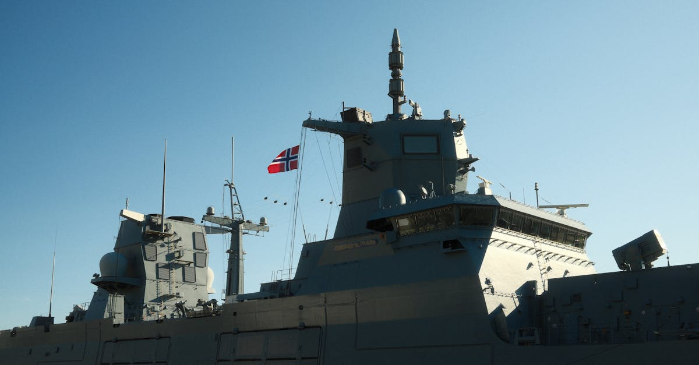

Le détroit d'Hormuz : pourquoi ce passage change tout
Ce lundi 13 avril 2026, les marchés mondiaux ont été brutalement secoués par l'escalade des tensions au détroit d'Hormuz, ce corridor maritime étroit de 33 kilomètres de large situé entre l'Iran et le sultanat d'Oman. Ce goulet d'étranglement stratégique est tout simplement le point de passage le plus critique du commerce pétrolier mondial : environ 20% de la production mondiale de pétrole y transite chaque jour, soit près de 17 millions de barils quotidiens. Le gaz naturel liquéfié (GNL) du Qatar, premier exportateur mondial, emprunte également cette voie unique.
Quand l'Iran a annoncé des exercices militaires de grande envergure dans la zone, accompagnés de déclarations menaçant de restreindre le trafic maritime, les marchés n'ont pas attendu pour réagir. Le pétrole brut Brent a bondi au-delà des 100 dollars le baril en quelques heures de trading — un seuil psychologique majeur que le marché n'avait plus touché depuis la crise énergétique de 2022.
Ce qui rend le détroit d'Hormuz si critique, c'est l'absence totale d'alternative viable. Contrairement au canal de Suez, où le contournement par le cap de Bonne-Espérance reste possible (quoique coûteux), il n'existe aucune route maritime alternative pour acheminer le pétrole du Golfe Persique vers les marchés mondiaux. L'Arabie saoudite dispose certes d'un oléoduc traversant le pays jusqu'à la mer Rouge, mais sa capacité est limitée à environ 5 millions de barils par jour — loin des volumes qui transitent habituellement par Hormuz.
L'onde de choc a immédiatement atteint les marchés crypto. Comme l'a rapporté CoinDesk, les marchés des cryptomonnaies ont calé alors que le pétrole franchissait les 100 dollars, Bitcoin et Ethereum reculant significativement tandis que les traders adoptaient des positions défensives face à l'incertitude géopolitique grandissante.
Le pétrole à 100 dollars : contexte historique et implications
Le franchissement des 100 dollars le baril n'est pas un événement anodin. La dernière fois que le brut a atteint ce niveau, c'était au printemps 2022, dans le sillage de l'invasion de l'Ukraine par la Russie. À l'époque, le Brent avait brièvement touché 139 dollars en mars 2022 avant de redescendre progressivement. Avant cela, il faut remonter à 2014 pour retrouver des niveaux comparables, et à la flambée historique de 2008 où le baril avait atteint 147 dollars.
Chaque épisode de pétrole à trois chiffres a engendré des conséquences économiques profondes. En 2022, la hausse des prix de l'énergie avait contribué à propulser l'inflation américaine au-dessus de 9%, forçant la Fed à déclencher le cycle de hausse de taux le plus agressif depuis les années 1980. Les marchés crypto avaient perdu plus de 60% de leur capitalisation totale en quelques mois.
L'impact sur les chaînes d'approvisionnement
Un pétrole durablement au-dessus de 100 dollars génère un effet en cascade sur l'ensemble de l'économie mondiale :
- Les coûts de transport augmentent, renchérissant tous les biens importés
- La pétrochimie, qui fournit les matières premières pour des milliers de produits, répercute la hausse
- Les marges des entreprises se contractent, pesant sur les bénéfices et donc sur les marchés actions
- Les consommateurs voient leur pouvoir d'achat amputé par la hausse des carburants et du chauffage
- Les banques centrales se retrouvent face au dilemme inflation contre croissance
Pour les marchés crypto, cet environnement est doublement négatif : il réduit l'appétit pour le risque et augmente les coûts opérationnels de l'infrastructure blockchain, notamment le minage.
Réaction détaillée des marchés crypto
Les données de marché du 13 avril montrent un recul généralisé et significatif de l'ensemble de l'écosystème crypto. Voici le panorama complet :
Bitcoin et Ethereum en première ligne
- Bitcoin (BTC) a reculé de 3,2% en séance, repassant sous les 69 000 dollars. Les volumes de vente ont triplé par rapport à la moyenne des 7 jours précédents, signe d'une panique institutionnelle
- Ethereum (ETH) a chuté de 4,1%, pénalisé par la pression additionnelle des positions DeFi en cours de liquidation. Le ratio ETH/BTC a touché son plus bas niveau depuis trois semaines
Altcoins : une correction amplifiée
Les altcoins ont subi une correction moyenne de 5 à 8%, avec des disparités notables :
- Les tokens liés au gaming et au metaverse ont perdu entre 10 et 15%, considérés comme les plus spéculatifs
- Les tokens d'infrastructure (Solana, Avalanche, Polygon) ont mieux résisté avec des baisses de 3 à 5%
- Les tokens liés à l'énergie et au secteur RWA (Real World Assets) ont paradoxalement limité leurs pertes, certains bénéficiant de la thématique pétrolière
Stablecoins : la fuite vers la sécurité
Les flux vers les stablecoins ont atteint des niveaux records pour 2026. USDT a vu sa capitalisation augmenter de 800 millions de dollars en 24 heures, tandis que USDC a enregistré des entrées nettes de 450 millions de dollars. Ce mouvement massif traduit une stratégie claire : les investisseurs ne quittent pas l'écosystème crypto, mais ils se mettent à l'abri en attendant que la tempête passe.
Les dérivés en surchauffe
Le marché des futures et options crypto a enregistré des données révélatrices :
- Plus de 200 millions de dollars de liquidations en seulement 4 heures, majoritairement des positions longues
- Le funding rate a basculé en territoire négatif sur Bitcoin et Ethereum, indiquant que les shorts dominent désormais le marché
- La volatilité implicite des options à 30 jours a bondi de 40%, reflétant l'incertitude extrême des opérateurs
- L'open interest sur les futures BTC a paradoxalement augmenté de 12%, signe que de nouveaux acteurs ouvrent des positions directionnelles plutôt que de simplement clôturer

Les mécanismes de corrélation pétrole-crypto
La relation entre le prix du pétrole et les cryptomonnaies peut sembler contre-intuitive pour les observateurs novices. Après tout, Bitcoin a été conçu comme un actif décorrélé du système financier traditionnel. Pourtant, les mécanismes de transmission sont bien réels et documentés par la recherche académique récente.
L'effet risk-off global
Quand une crise géopolitique majeure éclate, les investisseurs institutionnels activent un protocole de réduction du risque quasi automatique. Ils réduisent leur exposition aux actifs considérés comme risqués — actions technologiques, cryptomonnaies, obligations à haut rendement — pour se réfugier vers le dollar américain, l'or physique et les bons du Trésor. Depuis l'approbation des ETF Bitcoin spot en janvier 2024, Bitcoin est plus que jamais intégré dans les portefeuilles institutionnels, ce qui signifie qu'il subit désormais les mêmes rotations sectorielles que les actifs traditionnels.
Le coût de l'énergie et le minage
Le pétrole à 100 dollars entraîne une hausse mécanique des coûts énergétiques mondiaux. Pour les mineurs de Bitcoin, dont l'électricité représente entre 60% et 80% des coûts opérationnels, l'impact est direct et sévère :
- Une hausse de 20% du prix de l'énergie réduit les marges des mineurs de 15 à 25 points de pourcentage
- Les mineurs les moins efficaces sont contraints de vendre leurs réserves de BTC pour couvrir leurs charges, créant une pression vendeuse supplémentaire
- Le hashrate pourrait diminuer si des fermes de minage deviennent non rentables, affectant temporairement la sécurité du réseau
- Le coût de production d'un Bitcoin, actuellement estimé autour de 45 000 dollars, pourrait grimper significativement
L'inflation et la politique monétaire de la Fed
Le pétrole cher relance mécaniquement les pressions inflationnistes. Alors que les marchés anticipaient encore récemment deux baisses de taux de la Fed en 2026, un pétrole durablement au-dessus de 100 dollars pourrait changer radicalement la donne. Si l'inflation repart au-dessus de 3%, la Réserve fédérale pourrait non seulement retarder ses baisses de taux, mais potentiellement les inverser — un scénario que les marchés crypto redoutent plus que tout autre, car les taux élevés réduisent l'attractivité relative des actifs ne générant pas de rendement.
L'analyse de Nouriel Roubini : scénarios d'escalade
L'économiste Nouriel Roubini, célèbre pour avoir prédit la crise des subprimes de 2008 et surnommé « Dr. Doom », a été interviewé par Bloomberg ce même 13 avril au sujet de la situation iranienne. Son analyse, comme à l'accoutumée, ne laisse pas place à l'optimisme béat.
Roubini a évoqué trois scénarios possibles :
- Scénario 1 — Désescalade négociée : Une médiation internationale (probablement via la Chine, principal acheteur de pétrole iranien) aboutit à un accord de désescalade. Le pétrole redescend sous 90 dollars en quelques semaines. Probabilité estimée par Roubini : 30%
- Scénario 2 — Blocus prolongé : L'Iran maintient sa pression militaire pendant plusieurs mois, créant une incertitude durable. Le pétrole oscille entre 100 et 120 dollars. Les marchés s'adaptent mais la volatilité reste élevée. Probabilité : 45%
- Scénario 3 — Escalade et changement de régime : Le conflit s'intensifie, impliquant directement les États-Unis et leurs alliés. Ce scénario, le plus extrême, pourrait voir le pétrole dépasser 150 dollars et déclencher une récession mondiale. Probabilité : 25%
Pour les marchés crypto, Roubini a souligné un paradoxe intéressant : si à court terme la crise est négative pour Bitcoin (fuite vers la sécurité traditionnelle), un conflit prolongé pourrait paradoxalement renforcer le narratif de Bitcoin comme réserve de valeur alternative, notamment dans les pays directement affectés par le conflit ou les sanctions.

Précédents historiques : comment la crypto a réagi aux crises géopolitiques
L'histoire récente offre plusieurs exemples éclairants sur la réaction des marchés crypto face aux chocs géopolitiques. Ces précédents permettent de mieux anticiper les dynamiques actuelles.
Invasion de l'Ukraine (février 2022)
Bitcoin a chuté de 8% dans les premières 48 heures suivant l'invasion, passant de 38 000 à environ 34 500 dollars. Cependant, il a rebondi de 15% dans les deux semaines suivantes, porté par la demande ukrainienne et russe pour des moyens de paiement alternatifs. Le volume des transactions peer-to-peer en rouble et en hryvnia avait explosé, démontrant l'utilité concrète de la crypto en temps de crise.
Tensions Taïwan-Chine (août 2022)
La visite de Nancy Pelosi à Taïwan avait provoqué une chute de 5% de Bitcoin en 24 heures. Le rebond avait été plus lent, car la crise s'inscrivait dans un bear market généralisé. Néanmoins, les volumes sur les exchanges asiatiques avaient bondi de 40%, montrant un intérêt accru pour la crypto comme couverture géopolitique dans la région.
Crise bancaire américaine (mars 2023)
L'effondrement de Silicon Valley Bank et de Signature Bank — bien que de nature financière plutôt que géopolitique — avait paradoxalement propulsé Bitcoin de 20 000 à 28 000 dollars en quelques semaines. Ce précédent est crucial car il démontre que dans certains scénarios de crise, Bitcoin peut jouer le rôle de valeur refuge alternative quand la confiance dans le système bancaire traditionnel s'érode.
Leçon clé
Le pattern récurrent est le suivant : choc initial négatif (24-72 heures de vente panique), suivi d'un rebond technique, puis d'une tendance de fond déterminée par la durée et la gravité de la crise. Les crises courtes sont des opportunités d'achat ; les crises prolongées remodèlent durablement les corrélations de marché.
Naviguer la volatilité géopolitique avec l'intelligence artificielle
Dans ce type d'environnement où l'information circule à une vitesse vertigineuse et où chaque déclaration diplomatique peut faire bouger les marchés de plusieurs pourcents, les outils d'intelligence artificielle offrent un avantage décisif aux investisseurs.
Analyse de sentiment géopolitique en temps réel
Les modèles de traitement du langage naturel (NLP) de dernière génération sont capables de traiter simultanément des milliers de sources d'information — dépêches Reuters et AFP, fils Twitter/X de diplomates et de journalistes, communiqués officiels des gouvernements, rapports des agences de renseignement open source, et même l'analyse d'images satellite montrant les mouvements de navires dans le détroit. Ces systèmes produisent un score de risque géopolitique actualisé en continu, permettant aux investisseurs de calibrer leur exposition en fonction du niveau de menace réel plutôt que du bruit médiatique.
Modélisation de scénarios et stress testing
Les plateformes d'IA avancées permettent de modéliser l'impact financier de chaque scénario géopolitique sur un portefeuille donné. En quelques secondes, un investisseur peut visualiser :
- L'impact d'un pétrole à 120 dollars sur ses positions en tokens de minage
- La performance historique de son portefeuille dans des configurations macro similaires
- Les corrélations dynamiques entre ses actifs, qui changent significativement en période de crise
- Les points de rupture où ses positions à effet de levier seraient liquidées
Exécution adaptative et gestion du risque automatisée
Les algorithmes de trading alimentés par l'IA ajustent automatiquement les positions en fonction de l'évolution de la situation. En cas d'escalade détectée par le module de sentiment, le système peut réduire l'exposition aux actifs les plus volatils et augmenter la part de stablecoins. En cas de signal de résolution diplomatique, il peut repositionner rapidement le portefeuille pour capturer le rebond. Cette réactivité en millisecondes, couplée à l'absence totale de biais émotionnel, est tout simplement impossible à reproduire par un opérateur humain, surtout en période de stress intense.
Détection de signaux faibles
L'un des apports les plus précieux de l'IA est sa capacité à identifier des signaux précurseurs que les analystes humains manquent souvent. Par exemple, une augmentation inhabituelle des transactions on-chain depuis des adresses localisées au Moyen-Orient, ou des flux anormaux vers certains exchanges, peuvent annoncer un mouvement de marché avant même que l'information géopolitique ne soit publique.
Stratégies pour les investisseurs : défensif ou opportuniste ?
Face à cette crise, deux approches diamétralement opposées s'offrent aux investisseurs crypto. Le choix dépend de la tolérance au risque, de l'horizon d'investissement et de la conviction sur l'issue de la crise.
Stratégie défensive : protéger le capital
- Augmenter la part de stablecoins à 25-35% du portefeuille pour disposer de liquidités en cas de correction supplémentaire
- Réduire drastiquement le levier sur toutes les positions ouvertes — un événement géopolitique peut provoquer des gaps de prix qui invalident les stop-loss
- Placer des ordres stop-loss serrés sur les altcoins les plus spéculatifs, qui souffriront le plus en cas de capitulation
- Envisager des options put sur Bitcoin comme assurance contre une chute brutale
- Diversifier vers l'or tokenisé (PAXG, XAUT) qui bénéficie historiquement des crises géopolitiques
Stratégie opportuniste : acheter la peur
- Les corrections déclenchées par des chocs géopolitiques sont historiquement des opportunités d'achat pour Bitcoin — le prix moyen 90 jours après un choc géopolitique majeur est supérieur de 22% au point bas
- Mettre en place des ordres d'achat échelonnés (DCA renforcé) sur Bitcoin et Ethereum à des niveaux de support clés
- Surveiller le cours du pétrole : une stabilisation sous 95 dollars signalerait un retour au calme et un probable rebond crypto
- Les tokens liés à l'infrastructure énergétique décentralisée et aux RWA pourraient surperformer à moyen terme si la crise accélère la transition énergétique
- Accumuler des positions sur les protocoles DeFi générant des rendements réels, dont la proposition de valeur se renforce quand les taux traditionnels restent élevés
L'approche hybride recommandée
Pour la majorité des investisseurs, une approche hybride est la plus judicieuse : sécuriser 60% du portefeuille avec des positions défensives (BTC, ETH, stablecoins), tout en allouant 40% à des positions opportunistes avec des points d'entrée définis à l'avance. L'utilisation d'outils d'IA pour le suivi en temps réel des développements géopolitiques permet d'ajuster cette répartition de manière dynamique.
Conclusion : une crise révélatrice de la maturité du marché crypto
Le franchissement des 100 dollars par le baril de pétrole suite au blocus du détroit d'Hormuz constitue un test de résistance majeur pour l'ensemble de l'écosystème des cryptomonnaies. Cette crise est révélatrice à plusieurs niveaux.
Premièrement, elle confirme que les marchés crypto ne vivent plus dans une bulle isolée. L'intégration croissante avec la finance traditionnelle — via les ETF, les investisseurs institutionnels et les produits dérivés réglementés — signifie que les chocs macroéconomiques et géopolitiques se transmettent désormais quasi instantanément aux prix des cryptomonnaies. Le temps où Bitcoin évoluait de manière totalement indépendante des marchés traditionnels est révolu.
Deuxièmement, cette crise met en lumière le double visage de Bitcoin. À court terme, il se comporte comme un actif risqué, vendu aux côtés des actions tech lors des paniques de marché. Mais à moyen et long terme, les crises géopolitiques qui érodent la confiance dans les systèmes financiers traditionnels et les monnaies fiat tendent à renforcer le narratif de Bitcoin comme or numérique et réserve de valeur décentralisée.
Troisièmement, et c'est peut-être le point le plus important pour les investisseurs actifs, cette crise démontre que dans un monde où l'information géopolitique impacte les marchés en temps réel, disposer d'outils d'analyse performants n'est plus un luxe mais une nécessité. Les investisseurs qui s'appuient sur l'intelligence artificielle pour analyser le sentiment géopolitique, modéliser des scénarios et ajuster automatiquement leurs positions ont un avantage stratégique considérable sur ceux qui naviguent à vue.
Comme l'a souligné Nouriel Roubini dans son interview à Bloomberg, la situation au détroit d'Hormuz pourrait se résoudre rapidement ou au contraire s'inscrire dans la durée. Dans les deux cas, les marchés crypto seront en première ligne. La question pour chaque investisseur n'est donc pas de savoir si il faut se préparer à la volatilité géopolitique, mais comment s'y préparer efficacement. Et en 2026, la réponse passe inévitablement par des outils d'analyse et de décision augmentés par l'IA — des outils qui transforment le chaos informationnel en signaux exploitables et l'incertitude en opportunités calculées.